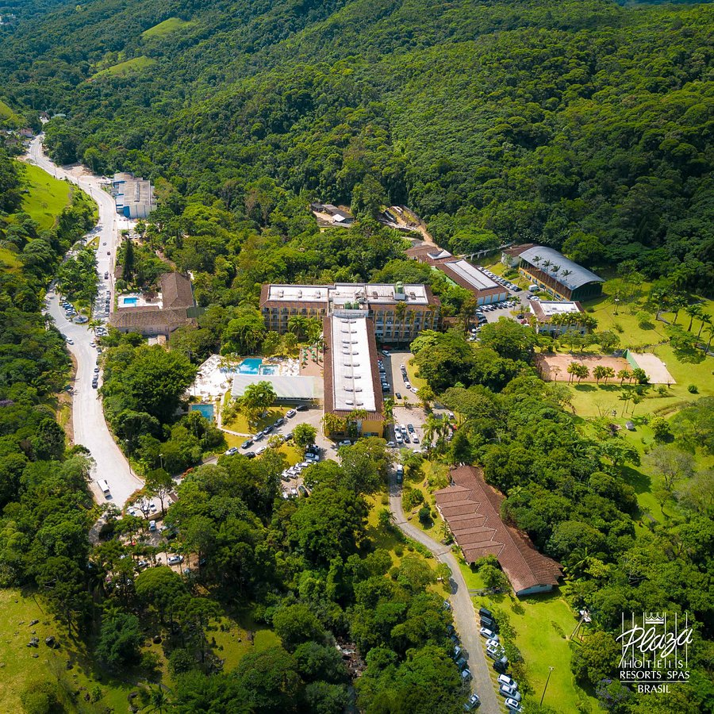
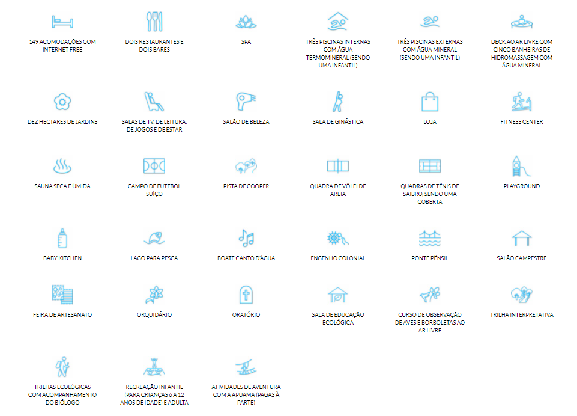

Bem Vindo ao Plaza Resort & Spa Caldas da Imperatriz!
Um Resort cercado pela exuberante Mata Atlântica de Santo Amaro da Imperatriz, com várias piscinas
e banheiras com água termal internas ou espalhadas pelos jardins com 10 hectares repletos de cascatas
das águas que nascem das montanhas da Serra do Tabuleiro, em Santa Catarina. Este é o cenário que você
encontra no Plaza Caldas da Imperatriz Resort & SPA para descansar e se divertir durante as férias em família
ou viagens de incentivo e reuniões de negócios oxigenadas por muito ar puro.
Além da infraestrutura completa do Resort, com quadras de esportes de todos os tipos, restaurantes e bares
com excelente gastronomia, você contará com a presença da equipe de animação e sua criativa programação para
crianças e adultos e do biólogo do Plaza Caldas da Imperatriz, que acompanha os passeios nas trilhas ecológicas
e coordena as atividades de observação de aves e orquídeas do Resort.

Alguns de nossos serviços e confortos
Além da infraestrutura completa do Resort, com quadras de esportes de todos os tipos, restaurantes e bares com
excelente gastronomia, você contará com a presença da equipe de animação e sua criativa programação para crianças
e adultos e do biólogo do Plaza Caldas da Imperatriz, que acompanha os passeios nas trilhas ecológicas e coordena
as atividades de observação de aves e orquídeas do Resort.
As águas termais do Plaza Caldas da Imperatriz se equiparam às de Baden Baden, na Alemanha, as melhores do mundo, e são procuradas por turistas de todo o Brasil e América do Sul por suas qualidades curativas. Por isso, o SPA Plaza Caldas da Imperatriz faz uso dessas águas, transformando-se num verdadeiro centro de tratamento de beleza e saúde, com programas de desintoxicação, emagrecimento e relaxamento.

As águas termais do Plaza Caldas da Imperatriz se equiparam às de Baden Baden, na Alemanha, as melhores do mundo, e são procuradas por turistas de todo o Brasil e América do Sul por suas qualidades curativas. Por isso, o SPA Plaza Caldas da Imperatriz faz uso dessas águas, transformando-se num verdadeiro centro de tratamento de beleza e saúde, com programas de desintoxicação, emagrecimento e relaxamento.
Contato
Telefone Comercial: +55(48)3457-9699Telefone para Reservas: +55(48)3458-9598
Whatsapp: +55(48)99952-3675
Ficou interessado? Faça sua reserva on-line aqui

Site desenvolvido por ppedraum
Linguagens usadas: HTML/CSS
Github: ppedraum
2021-10-08
Linguagens usadas: HTML/CSS
Github: ppedraum
2021-10-08